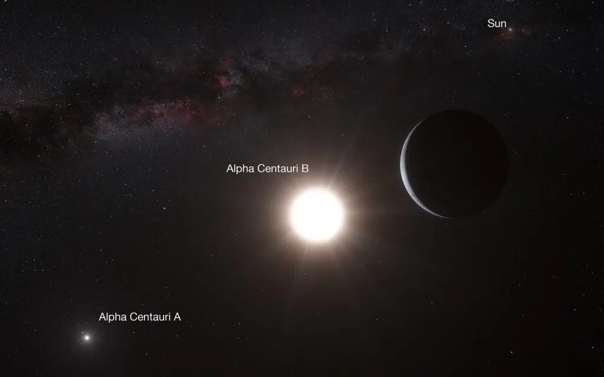
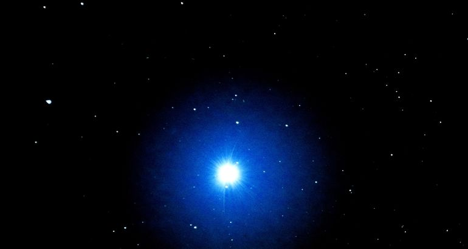
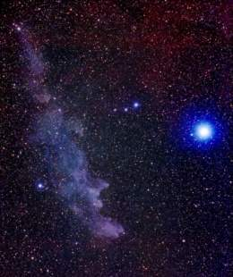
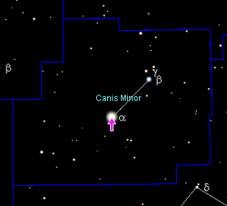
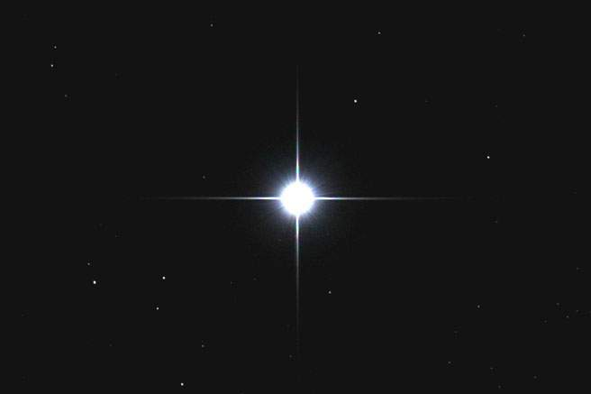

Las principales estrellas del Universo:
| NOMBRE | IMAGEN | DESCRIPCIÓN |
| ALPHA CENTAURI |  | Stephen Hawking, Yuri Milner y Mark Zuckerberg encabezan una junta directiva destinada a una nueva iniciativa llamada Breakthrough Starshot, cuya tecnología algún día podría usarse para llegar a la estrella vecina de la Tierra, Alfa Centauri. Además de ser un objetivo relativamente «fácil», ya que es una de las estrellas más cercanas al sol, los astrónomos han estado observando a nuestros vecinos estelares en busca de posibles planetas similares a la Tierra. Alfa Centauri es nuestra estrella cercana, pero cuando hablamos del espacio, no está tan cerca. Está a más de 4 años luz de distancia, o 25 mil millones de millas. El problema es que los viajes espaciales, tal como los conocemos, son muy lentos. Si la nave espacial Voyager de movimiento más rápido dejó nuestro planeta a 11 millas por segundo cuando los humanos abandonaron África por primera vez, habría llegado a Alfa Centauri en este momento. Alfa Centauri A: Es una estrella naranja tipo K que pertenece a un sistema estelar binario. Es brillante, grande y se cree que es más antiguo que el sol. Se clasifica como una enana amarilla. Tiene una rotación de 22 días. Alfa Centauri B: Es una estrella muy similar a nuestra estrella más grande, el Sol, de tipo espectral G, y gira en una órbita de unos 80 años. Se cree que nació al mismo tiempo que la A. |
| VEGA, LA ESTRELLA DEL NORTE |  | Vega es una brillante estrella ubicada a solo 25 años luz de la Tierra, visible en el cielo de verano del hemisferio norte. La estrella es parte de la constelación de Lira y, junto a las estrellas Deneb y Altair, forma un asterismo conocido como el Triángulo de Verano. Esta estrella tiene alrededor de 450 millones de años, lo que la hace más joven en comparación con nuestro propio sistema solar (que tiene 4.600 millones de años). Los estudios sobre Vega ayudan a los astrónomos a aprender más sobre los sistemas solares que se encuentran en las primeras etapas de su formación. |
| RIGEL (BETA ORIONIS) |  | Es la séptima estrella más brillante de todo el cielo nocturno. Se encuentra situada en la Constelación de Orión y posee una magnitud estelar de +0.18 que la convierte en la estrella más brillante de ese sistema, superior a la estrella alfa, Betelgeuse. Está a una enorme distancia difícil de precisar entre los 700 y 900 años-luz del Sistema Solar, lo cual unido a su enorme brillo nos da una idea de la majestuosidad de esta gigante blanco-azulada. Posee un brillo 50000 veces superior al del Sol y un radio 73 veces mayor, lo que abarcaría hasta la órbita de Mercurio. Se trata de un sistema triple, en el cual la estrella principal, denominada Rigel A, está acompañada por otras dos, Rigel B y Rigel C. Aunque la estrella acompañante, Rigel B, tiene magnitud +6,7, su proximidad a Rigel A —más de 500 veces más brillante— la hacen difícil de observar por telescopios poco potentes. Rigel es una estrella variable con pequeñas oscilaciones en su brillo, fenómeno poco común en supergigantes. El rango de variabilidad oscila entre 0,3 y 0,03 magnitudes, equivalente a una variación entre el 3% y el 30%, con un periodo de 25 días. Se ha propuesto que la variabilidad se debe a la existencia de una cuarta estrella en el sistema, pero generalmente se considera que la verdadera causa radica en pulsaciones en la superficie de la estrella principal. |
| PROCYON(ALFA CANIS MINORIS) |  | Es la estrella más importante de la constelación de Canis Minor (El Perro Menor) y la octava más brillante del cielo nocturno, con una magnitud estelar de +0.50. Es una binaria cuya componente principal Procyon "A" es una subgigante de color blanco-amarillento 2,1 veces mayor que el Sol y 7,3 veces más brillante. Procyon "B" por su parte es una enana blanca muy difícil de observar desde la Tierra, pues posee una magnitud estelar de +10,82 y orbita a la estrella principal con una frecuencia de 40,8 años. La constelación del Can Menor se identifica en el cielo nocturno invernal próximo a Orión. A simple vista podemos observar dos estrellas, por lo que la constelación se limita a una línea que une dos puntos, uno de ellos es Procyon, la única de primera magnitud en esta constelación. Es uno de los sistemas más cercanos, a una distancia aproximada de 11 años-luz de la Tierra y forma junto a Betelgeuse y Sirio el llamado Triángulo de invierno. |
| ACHERNAR (ALPHA ERIDANI) |  | Es la novena estrella más brillante del cielo nocturno, con una magnitud estelar de +0.58 y es la principal luminaria de la constelación de Erídano. Es de color blanco-azulado, está situada a 140 años-luz de distancia y es 7 veces mayor y 4000 veces más brillante que el Sol. Achernar es una estrella muy peculiar porque es una de las estrellas más planas conocidas. Las observaciones indican que su radio es casi 50% más largo en el ecuador que en los polos. Esto se debe a que la estrella rota a gran velocidad. |